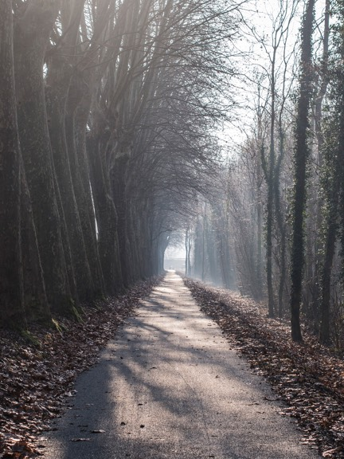
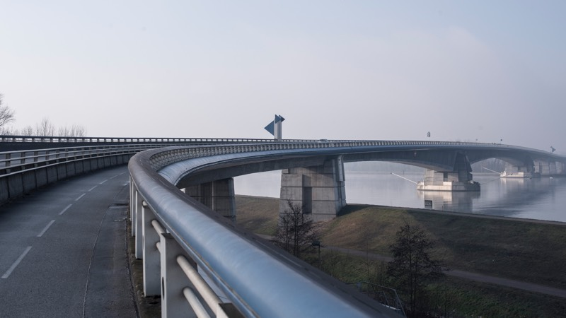
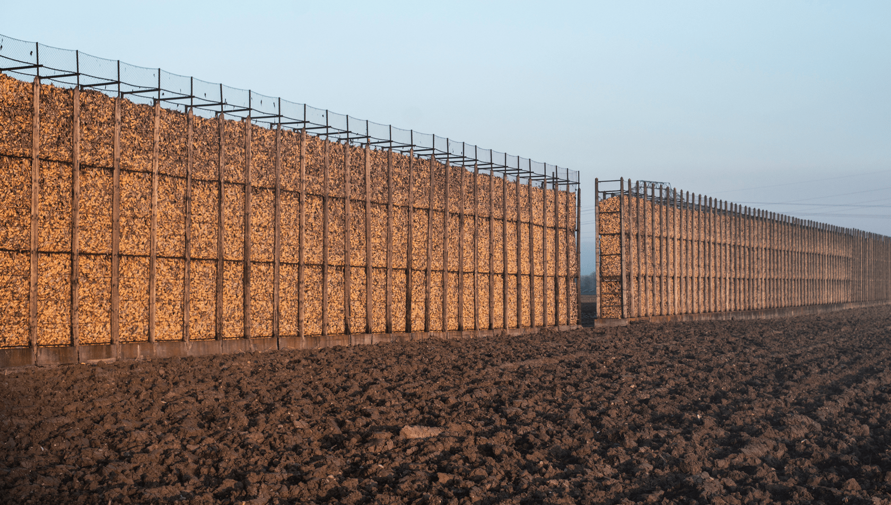
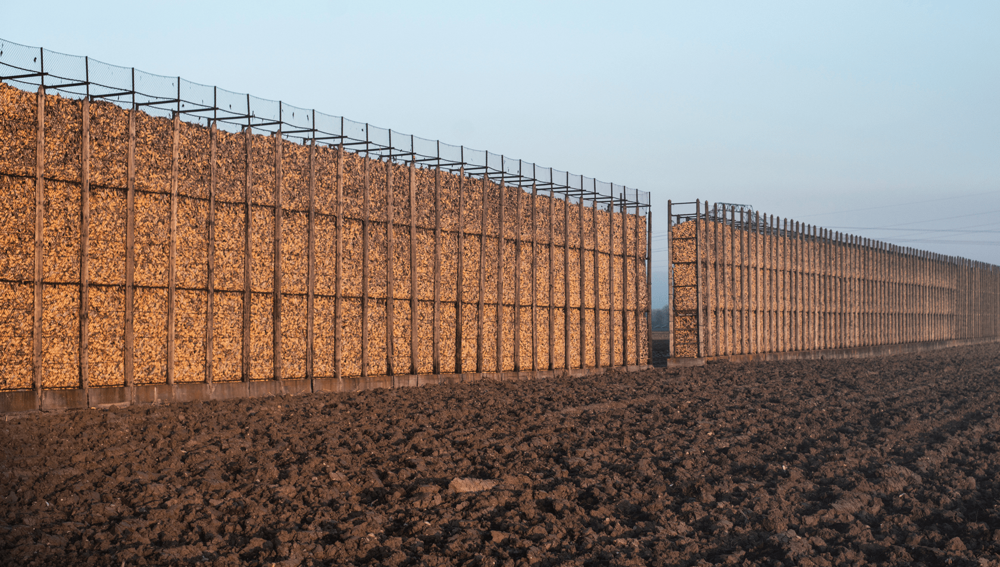
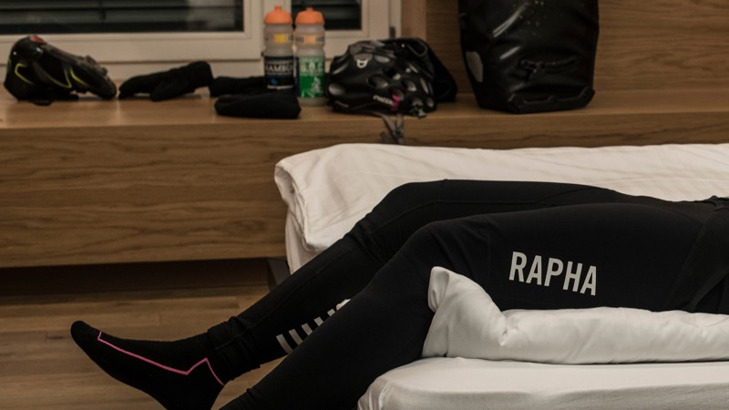

31. Dic
St. Gallen
Lindau
Distancia
52,8 km
Alititud
158 m
Calorias
479 kcal

En Alemania se dice para el día de año nuevo de que tengas un buen deslice. Y eso hice precisamente.

Me siento como si estuviera entrando al estadio en el final de una gran maratón. Falta tan poco pero aún hay trabajo por hacer. Es así que como en Alemania te desean un buen deslice en este día, fue así que tomé un tren hasta St. Gallen en Suiza con el objetivo de que mi último viaje fuera de placer y no de sufrimiento.
El 31 amaneció extremadamente helado con temperaturas de -6 grados, pero a pesar de las bajas temperaturas iba bien preparado. A excepción de las manos obviamente. Siempre sufro con mis manos en invierno.
Llegué con el trén a St. Gallen como a eso de las 9:30 horas, iniciando mi trayectoria de regreso a Lindau en Alemania, sin darme el tiempo de conocer más la ciudad, ya que debía llegar temprano a casa para prepararme para la cena de año nuevo.
Saliendo de la ciudad y tomando la ruta 7 me encontré con una espesa neblina, evitando ver el lago Bodensee desde las montañas.
El camino que desciende desde los 700 a 400 metros de altura estaba intransitada a esa hora, a excepción de algunos quioscos del camino que vendían vengalas y fuegos artificiales.
Una hora después de mi salida me encontraba ya de nuevo en el lago en la ciudad de Rorschach, tomando una pequeña pausa y recuperar energías no sólo para el resto de la ruta, sino que para la noche :)
 

La isla de Lindau fue mi última estación relevante de este recorrido, admirando la ciudad y el gran faro del puerto que tiene como atractivo. Junto al faro, se sienta un gran león (León de Bayern) que mira hacia Suiza y Austria y protege la ciudad.
Así termina mi primer Rapha Festive 500 con una gran experiencia como ciclista.
Si bien es cierto, existen otras rutas que realizé entre navidad y año nuevo, pero estas fueron las más relevantes que a mi gusto pensé en comunicar. Se puede ver en detalle mis rutas en Strava. Al final de este sitio están los links por si me quieren seguir, o ponerse en contacto conmigo por si tienen dudas del recorrido.
Y los agradecimientos!: Primero a mi amante y esposa Miriam, al prestarme su bicicleta para esta noble acción. Por sobre todo también de que me haya dado estos días para mis proyectos personales, cuando en realidad lo único que quería ella era estar estas vacaciones más conmigo.
También un especial –Gracias!– a Mauricio Palma por su amistad y generosidad en ayudarme en la programación y soporte técnico. A Felix Lehmann también en preparar el diseño para la web.